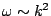
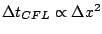
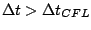
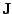
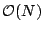
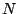
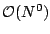
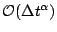
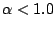

We present results from our research on Jacobian-free Newton-Krylov (JFNK) methods applied to the time-dependent, primitive-variable, 3D extended magnetohydrodynamics (MHD) equations. MHD is a fluid description of the plasma state. While plasma is made up of independent (but coupled) ion and electron species, the standard MHD description of a plasma only includes ion time and length scales (one-fluid model). Extended MHD (XMHD) includes nonideal effects such as nonlinear, anisotropic transport and two-fluid (Hall and diamagnetic) effects. XMHD supports so-called dispersive waves (whistler, ion acoustic), which feature a quadratic dispersion relation . In explicit time integration methods, this results in a stringent CFL limit , which severely limits their applicability to the study of long-frequency phenomena in XMHD.
A fully implicit implementation promises efficiency (by removing the CFL constraint) without sacrificing numerical accuracy [1]. However, the nonlinear nature of the XMHD system and the numerical stiffness of its fast waves make this endeavor very difficult. Newton-Krylov methods can meet the challenge provided suitable preconditioning is available.
We propose a successful preconditioning strategy for the 3D primitive-variable XMHD formalism. It is based on ``physics-based'' ideas [2,3], in which a hyperbolic system of equations (which is diagonally submissive for ) is ``parabolized'' to arrive to a diagonally dominant approximation of the original system, which is multigrid-friendly. The use of approximate multigrid (MG) techniques to invert the ``parabolized'' operator is a crucial step in the effectiveness of the preconditioner and the scalability of the overall algorithm. The parabolization procedure can be properly generalized using the well-known Schur decomposition of a 22 block matrix. In the context of XMHD, the resulting Schur complement is a system of PDEs that couples the three plasma velocity components, and needs to be inverted in a coupled manner. Nevertheless, a system MG treatment is still possible since, when properly discretized, the XMHD Schur complement is block diagonally dominant by construction, and block smoothing is effective.
In this presentation, we will discuss the derivation and validity of the physics-based preconditioner for resistive MHD and its generalization to XMHD, the connection with Schur complement analysis, and the system-MG treatment of the associated systems. A novel second-order, cell-centered, conservative finite-volume discretization has been recently developed [4] for the XMHD system above, and will be used in this work. It is suitable for general curvilinear geometries, solenoidal in and , numerically non-dissipative, and linearly and nonlinearly stable. We will demonstrate the algorithm using the GEM challenge configuration [5]. Grid convergence studies will demonstrate that CPU time scales scale optimally as , where  is the number of unknowns, and that the number of Krylov iterations scales as . Time convergence studies will demonstrate a favorable scaling with time step , with .
[1] D. A. Knoll, L. Chacón, L. G. Margolin, and V. A. Mousseau, J. Comput. Phys. 185 (2003) 583.
[2] L. Chacón, D. A. Knoll, and J. M. Finn, J. Comput. Phys., 178 (2002) 15.
[3] L. Chacón and D. A. Knoll, J. Comput. Phys., 188 (2003) 573.
[4] L. Chacón, Comp. Phys. Comm., 163 (2004) 143.
[5] J. Birn et al., J. Geophys. Res., 106 (2001) 3715.